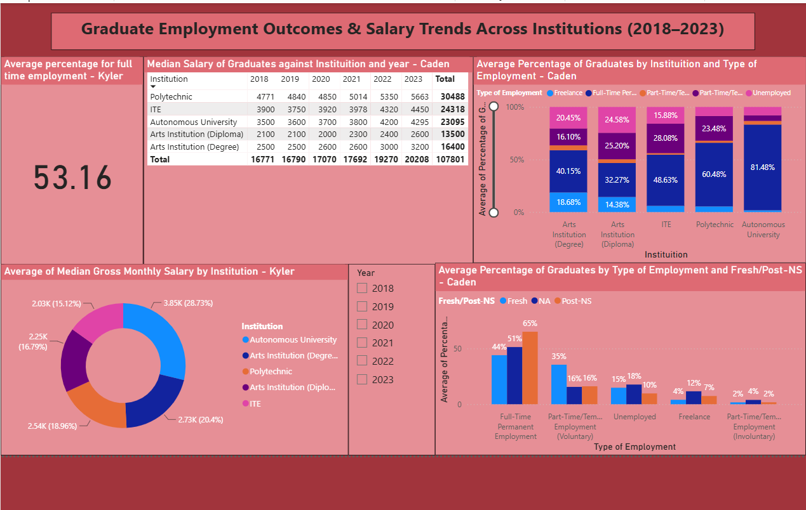

Academic group project · 2018–2023 data
Graduate Employment & Salary Trends
Exploring graduate outcomes across institutions from 2018–2023, with salary comparisons and a closer look at employment cohorts.
01 / THE QUESTION
Problem & objective
Explore how graduate salary and employment patterns vary across institutions and years, including fresh and post–National Service graduates.
02 / MY PART
My contribution
My contribution focused on salary trends and exceptions across institutions, employment patterns by institution, and comparisons between fresh and post–National Service graduates. The shared dashboard labels these panels with my name; other panels were created by a teammate.
03 / THE PROCESS
Approach & tools
- Use Power BI to compare salary trends across institutions from 2018–2023.
- Examine employment patterns across institutions and employment types.
- Compare outcomes for fresh and post–National Service graduates.
04 / PROJECT RECORD
Dashboard evidence
Original group dashboard. Caden-labelled panels show my contribution; the whole dashboard is shared group work. Open the full image to inspect the labels.

05 / CONTEXT
Limits of this work
These are descriptive comparisons, not evidence that institution or National Service status causes an outcome. Aggregated figures depend on the selected year and cohort; no business-impact claim is made.
06 / LEARNING
Connecting the pieces
The learning objective was to make differences between institutions and cohorts easier to examine through visual comparison.